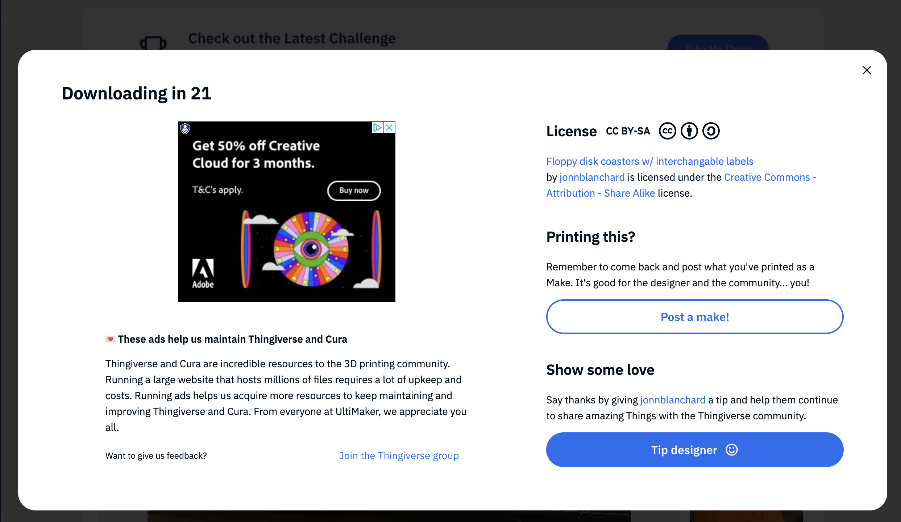
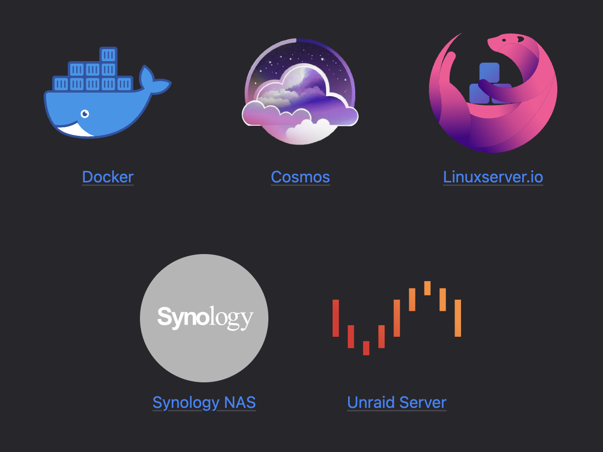

Manyfold: Federating 3d models
James Smith // floppy.org.uk
What's Manyfold?
Organising 3d print models
- Browse & Preview
- Organise & Tidy
- Troubleshoot & Convert
...a bit like having your own Thingiverse, but without this:
Self Hosted Container
Operation Modes
- Private single-user
- Multiuser
- Federated!
Federation
Note: this is about to release, probably next weekf3di namespace
Extension properties for 3d content.
concreteTypecompatibilityNote
...with many more to come.
Name chosen to be platform-independent.
Actors
| Internal type | Actor type | concreteType |
|---|---|---|
| Creator | "Person" | "Creator" |
| Model | "Service" | "Model" |
| Collection | "Group" | "Collection" |
| User | "Person" | "User" |
Activities
| Model/Creator/Collection | User | Note | |
|---|---|---|---|
| Create | both | send | |
| Update | both | send | |
| Delete | both | send | |
| Flag | recv | both | recv |
| Follow | recv | send | |
| Accept | send | recv | |
| Undo | recv | send |
Compatibility Notes
Most activities are changes to Actors; these won't show in microblog feeds.
So: post "Compatibility Notes", which describe the other activities.
"f3di:compatibilityNote": true
Federails
by @mtancoigne@mamot.frgitlab.com/experimentslabs/federails
#federails:matrix.org
Setup
bundle add federails
# config/routes.rb
mount Federails::Engine => '/'
rails generate federails:install
rails generate federails:install:migrations
Federails::ActorEntity
# app/models/user.rb
class User < ApplicationRecord
# Include the concern here:
include Federails::ActorEntity
# Configure field names
acts_as_federails_actor username_field: :username, name_field: :name,
profile_url_method: :user_url
end
Following
target = Federails::Actor.find_by_account "@floppy@mastodon.me.uk"
user.federails_actor.following_follows.create(target_actor: target)
Incoming requests:
class User < ApplicationModel
include Federails::ActorEntity
after_follow :throw_party
end
Federails::Activity
Federails::Activity.create!(
actor: user.federails_actor,
action: "Create",
entity: comment
)
Object Serialization
class Comment < ApplicationRecord
include Federails::DataEntity
acts_as_federails_data handles: "Note", actor_entity_method: :commenter
def to_activitypub_object
Federails::DataTransformer::Note.to_federation(
self,
content: comment.to_html,
custom: {
"sensitive" => sensitive,
}
)
end
end
Trust & Safety
https://github.com/manyfold3d/federails-moderation
- "Flag" activities
- Domain blocks
Thanks!
manyfold.app // @manyfold@3dp.chat
mastodon.me.uk // @Floppy@mastodon.me.uk